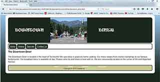

Hello, I am Gerald Peterson...
I am a Web Developer and Designer. I love the internet and I am passionate about doing what I can to
make the internet an exciting and enjoyable place to spend our valuable time on.
I have always had a passion for coding, the internet and creating "things". I believe this is where my
passion for Web Development and Design derives. I have had the pleasure to work on my creative skills
through the construction of advertisement flyers, video presentations and countless photo edits along with
web page designs. I encourage you to take a few moments to view some examples
of my work.
Project Examples
The projects below are examples of the types of projects I created through the curriculum with Metropolitan Community College.
This first project is a GIF I created in Photoshop to show that an animation could be created from a still image.
This next project is a very basic website that I created for a fictional local diner. This project was one of my first
where I learned to embed videos and utilized CSS more effectively to stylize various elements of each page and to create
forms for users to enter information into.
